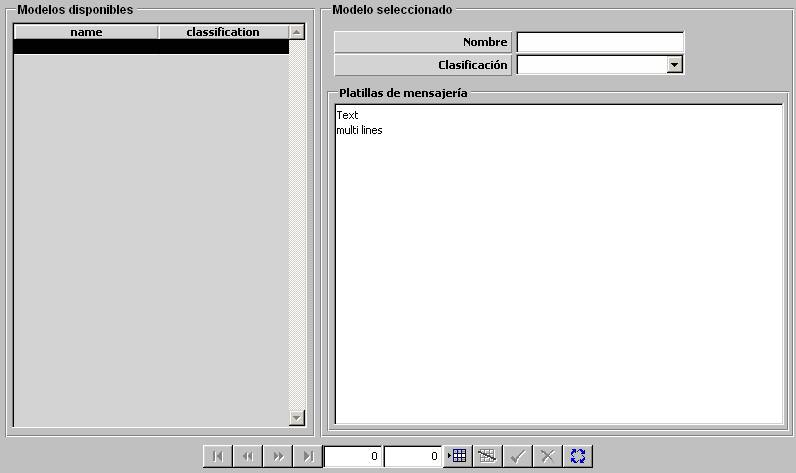

Base de Datos de Bibliografía

Mediante esta tabla el administrador del sistema puede elaborar un catálogo con los CD de documentación relacionada con el sistema, disponibles para consulta.
Para cada CD incluido en este catálogo se especifica lo siguiente:
Descripción del Contenido: Parámetro de tipo texto libre en el que se puede introducir una breve descripción del contenido del CD.